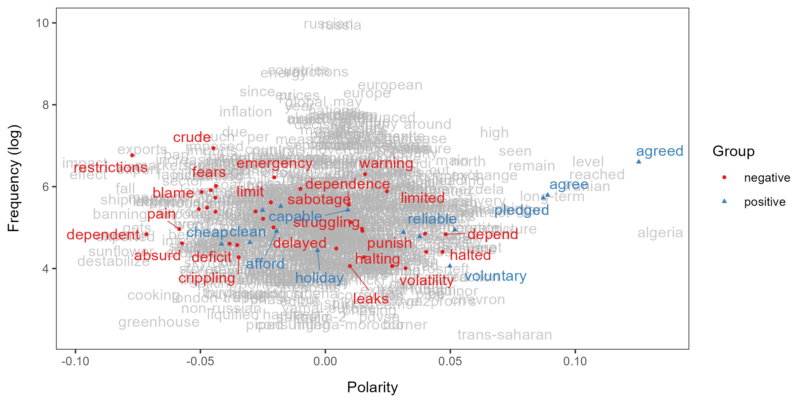
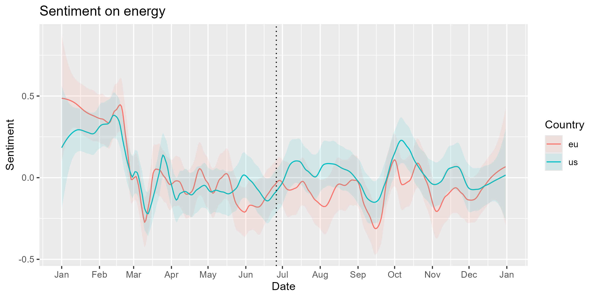

Application in research
Russian state media’s coverage of egnergy issues in the US and the EU
Source:vignettes/pkgdown/research.Rmd
research.RmdIn this example, we will analyze how much the proposition of the European Gas Demand Reduction Plan on 20 July affected Sputnik’s coverage of energy issues in the United States and the European Union.
library(LSX)
library(quanteda)
#> Package version: 3.3.1
#> Unicode version: 13.0
#> ICU version: 69.1
#> Parallel computing: 8 of 8 threads used.
#> See https://quanteda.io for tutorials and examples.
library(ggplot2)Preperation
We will analyze the same corpus as the introduction, so too the pre-processing.
corp <- readRDS("data_corpus_sputnik2022.rds") |>
corpus_reshape()
toks <- tokens(corp, remove_punct = TRUE, remove_symbols = TRUE,
remove_numbers = TRUE, remove_url = TRUE)
dfmt <- dfm(toks) |>
dfm_remove(stopwords("en"))We will use a dictionary of keywords in this example.
dict <- dictionary(file = "dictionary.yml")
print(dict[c("country", "energy")])
#> Dictionary object with 2 primary key entries and 2 nested levels.
#> - [country]:
#> - [us]:
#> - united states, us, american*, washington
#> - [uk]:
#> - united kingdom, uk, british, london
#> - [eu]:
#> - european union, eu, european*, brussels
#> - [se]:
#> - sweden, swedish, stockholm
#> - [fi]:
#> - finland, finnish, helsinki
#> - [ua]:
#> - ukraine, ukrainian*, kiev, kyiv
#> [ reached max_nkey ... 1 more key ]
#> - [energy]:
#> - gas, oil, engeryEstimate the polarity of words
To measure the sentiment specifically about energy issues, we collect
words that occur frequently around keywords such as “oil”, “gas”,
“energy” and passing them to terms. These keywords are
called target words.
seed <- as.seedwords(data_dictionary_sentiment)
term <- char_context(toks, pattern = dict$energy, p = 0.01)
lss <- textmodel_lss(dfmt, seeds = seed, terms = term, cache = TRUE,
include_data = TRUE, group_data = TRUE)
textplot_terms(lss)
Predict the polarity of documents
We can extract the document variables from the DFM in the LSS model and save the predicted polarity scores as a new variable.
Detect the mentions of country/region
We can detect the mentions of countries using the dictionary. If you want to classify texts by country more accurately, you should use the newsmap package.
dfmt_dict <- dfm(tokens_lookup(toks, dict$country[c("us", "eu")]))
print(head(dfmt_dict))
#> Document-feature matrix of: 6 documents, 2 features (91.67% sparse) and 4 docvars.
#> features
#> docs us eu
#> s1092644731.1 2 0
#> s1092644731.2 0 0
#> s1092644731.3 0 0
#> s1092644731.4 0 0
#> s1092644731.5 0 0
#> s1092644731.6 0 0We can create dummy variables for mentions of country/region by
dfm_group(dfmt_dict) > 0. We must group documents
because the unit of analysis is the articles in this example (recall
textmodel_lss(group_data = TRUE) above).
Results
We must smooth the polarity scores of documents separately for the
country/region using smooth_lss(). After smoothing, we can
see that the difference between the US and EU has expanded soon after
the proposition of the European Gas Demand Reduction Plan.
smo_us <- smooth_lss(subset(dat, us), lss_var = "lss", date_var = "date")
smo_us$country <- "us"
smo_eu <- smooth_lss(subset(dat, eu), lss_var = "lss", date_var = "date")
smo_eu$country <- "eu"
smo <- rbind(smo_us, smo_eu)
ggplot(smo, aes(x = date, y = fit, color = country)) +
geom_line() +
geom_ribbon(aes(ymin = fit - se.fit * 1.96, ymax = fit + se.fit * 1.96, fill = country),
alpha = 0.1, colour = NA) +
geom_vline(xintercept = as.Date("2022-06-26"), linetype = "dotted") +
scale_x_date(date_breaks = "months", date_labels = "%b") +
labs(title = "Sentiment on energy", x = "Date", y = "Sentiment",
fill = "Country", color = "Country")
To test if the changes after the proposition is statistically
significant, we should create a dummy variable after for
the period after the proposition and perform regression analysis with
its interactions with the country/region dummies. This is akin to the
difference-in-differences design that I often employ in analysis of
news (Watanabe 2017; Watanabe et al. 2022).
dat_war <- subset(dat, date >= as.Date("2022-02-24"))
dat_war$after <- dat_war$date >= as.Date("2022-06-20")
summary(dat_war[c("lss", "us", "eu", "after")])
#> lss us eu after
#> Min. :-9.19133 Mode :logical Mode :logical Mode :logical
#> 1st Qu.:-0.66951 FALSE:2448 FALSE:4544 FALSE:3394
#> Median :-0.02954 TRUE :4698 TRUE :2602 TRUE :3752
#> Mean :-0.03368
#> 3rd Qu.: 0.55619
#> Max. : 7.73921
#> NA's :3dat_war contains only the scores since the beginning of
the war, so the intercept is the average sentiment of the
articles without the mentions of the US or the EU before the proposition
during the war; usTRUE and euTRUE are the
average sentiment for the articles with the mentions of the US and the
EU in the period, respectively.
The coefficient of afterTRUE indicates that the overall
sentiment became more negative after the proposition (β =
-0.11; p < 0.01). The insignificant coefficient of
euTRUE:afterTRUE shows that the sentiment for the EU also
decreased, but the large positive coefficient of
usTRUE:afterTRUE suggests that the sentiment for the US
increased (β = 0.22; p < 0.001) and became more
positive than before the proposition.
reg <- lm(lss ~ us + eu + after + us * after + eu * after, dat_war)
summary(reg)
#>
#> Call:
#> lm(formula = lss ~ us + eu + after + us * after + eu * after,
#> data = dat_war)
#>
#> Residuals:
#> Min 1Q Median 3Q Max
#> -9.1370 -0.6343 0.0024 0.5883 7.6808
#>
#> Coefficients:
#> Estimate Std. Error t value Pr(>|t|)
#> (Intercept) 0.04156 0.03232 1.286 0.1985
#> usTRUE -0.09591 0.03737 -2.567 0.0103 *
#> euTRUE -0.05634 0.03656 -1.541 0.1234
#> afterTRUE -0.11148 0.04382 -2.544 0.0110 *
#> usTRUE:afterTRUE 0.22429 0.05058 4.434 9.38e-06 ***
#> euTRUE:afterTRUE -0.03766 0.04980 -0.756 0.4495
#> ---
#> Signif. codes: 0 '***' 0.001 '**' 0.01 '*' 0.05 '.' 0.1 ' ' 1
#>
#> Residual standard error: 1.005 on 7137 degrees of freedom
#> (3 observations deleted due to missingness)
#> Multiple R-squared: 0.004388, Adjusted R-squared: 0.00369
#> F-statistic: 6.291 on 5 and 7137 DF, p-value: 7.844e-06Conclusions
Our analysis shows that the Sputnik covered the energy issues in the US more positively while those in the EU more negatively after the proposition the European Gas Demand Reduction Plan. Our findings are preliminary, but we can give them a tentative interpretation: the Russian government attempted to create divisions between the US and the EU by emphasizing the different impact of the Ukraine war and the sanctions against Russia on American and European lives.
References
- Watanabe, K. (2017). Measuring news bias: Russia’s official news agency ITAR-TASS’ coverage of the Ukraine crisis. European Journal of Communication. https://doi.org/10.1177/0267323117695735.
- Watanabe, K., Segev, E., & Tago, A. (2022). Discursive diversion: Manipulation of nuclear threats by the conservative leaders in Japan and Israel, International Communication Gazette. https://doi.org/10.1177/17480485221097967.